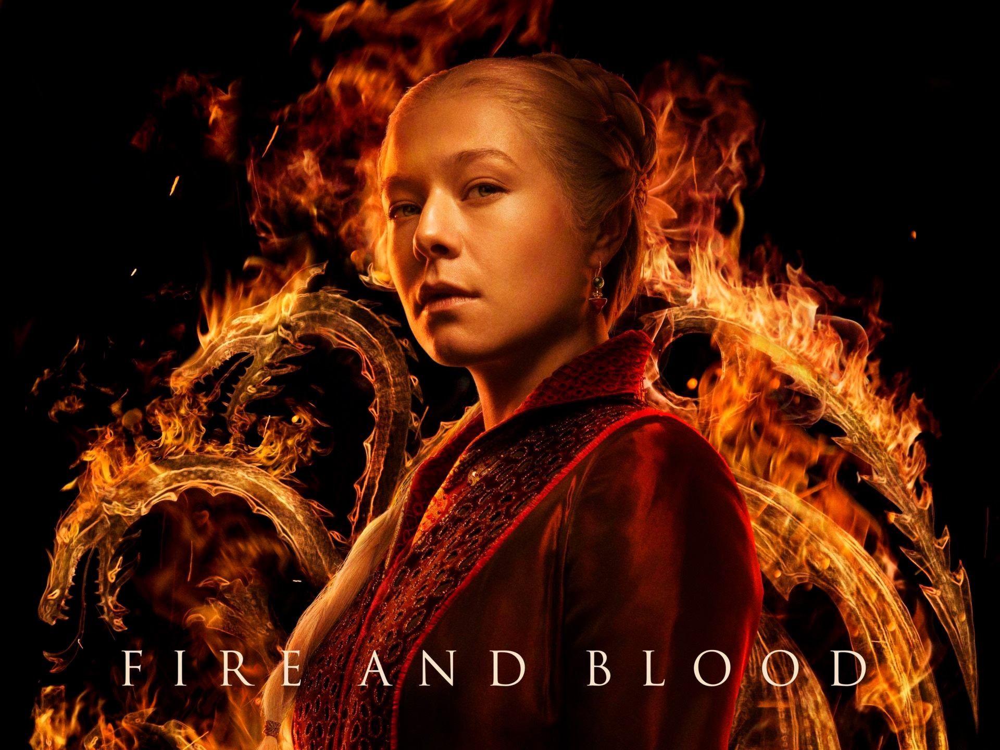
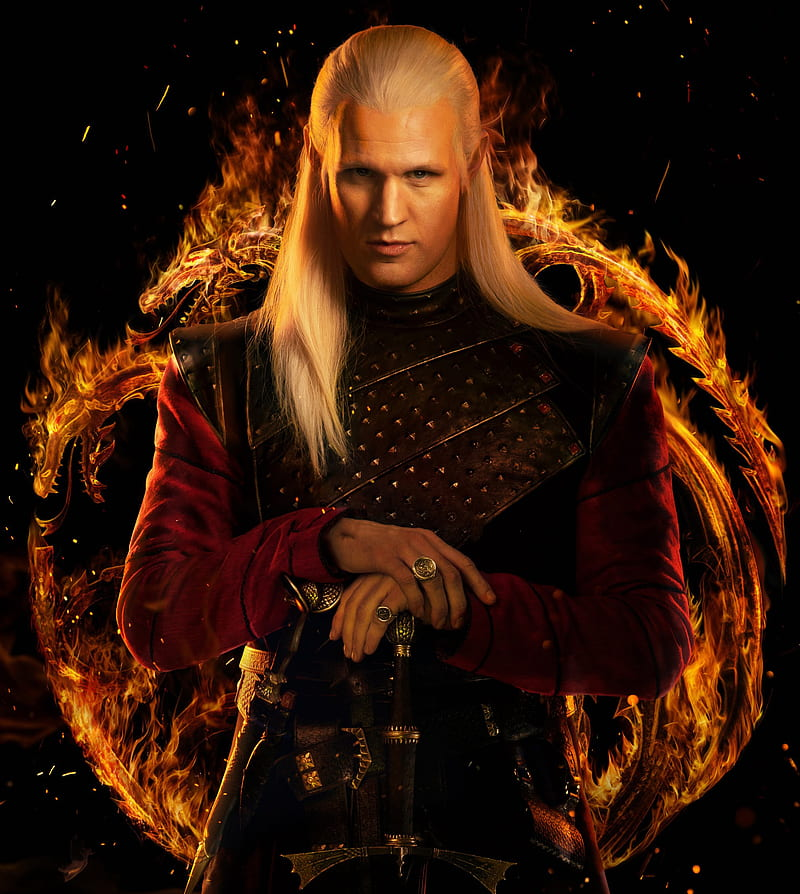
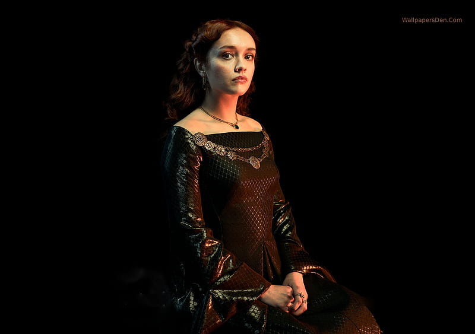
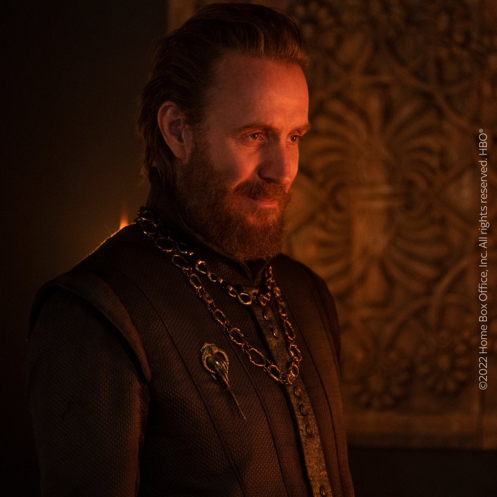
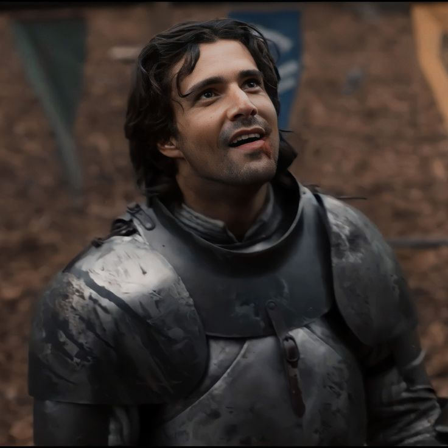
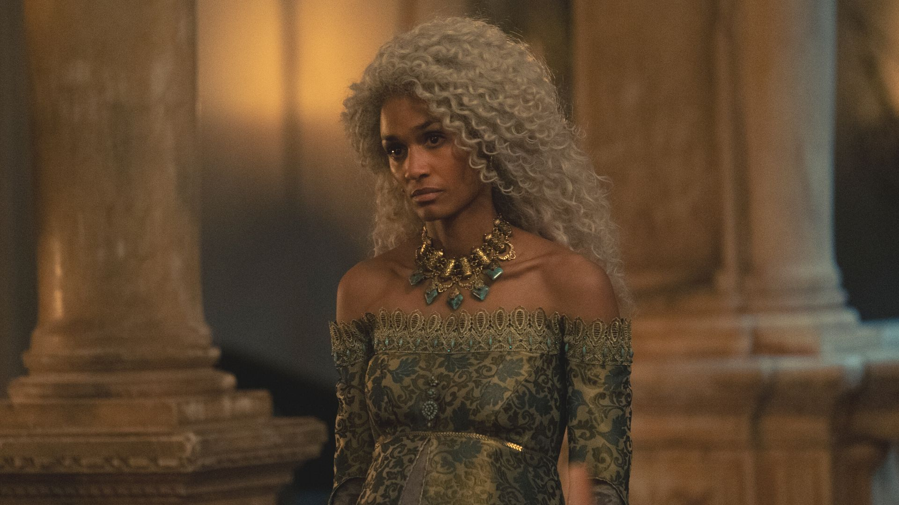

Targaryen

Rhaenyra.- Fue la primogénita y única hija del rey Viserys con su primer matrimonio y considerada su sucesora. Desafiada por su medio hermano menor Aegon. Montará su dragón Syrax, para reclamar lo que le pertenece.

Daemon.- Nieto del rey Jaehaerys el Conciliador, hermano del rey Viserys I. Con el apoyo de su dragón Caraxes, y la flota de Lord Corlys Velaryon se autoproclamó Rey de los Peldaños de Piedra. Como esposo de Rhaynera la apoyara en su reclamo hasta las últimas consecuencias.

Viserys I.- Heredó el reino después de cincuenta años de paz y prosperidad sin precedentes, una edad dorada que Viserys se esforzó por no interrumpir, fue el quinto rey de la dinastía Targaryen en gobernar los Siete Reinos.
Hightower

Alicent.- Alicent Reina consorte, hija de Ser Otto Hightower y segunda esposa del rey Viserys I Targaryen, encabeza el bando de “los verdes” y así lograr ver a su hijo coronado.

Otto Hightower.- Fue Mano del Rey de Jaehaerys I, y Viserys I, padre de la reina Alicent Hightower. considerado un hombre de gran aprendizaje en su tiempo, además de describirse como altivo y dominante.

Sir Criston Cole.- Apodado el Hacedor de Reyes, fue Lord Comandante de la Guardia Real durante los reinados de Viserys I y Aegon II Targaryen, el rencor lo hizo fiel al bando de “los verdes”, y protector de la Reina Alicent.
Velaryon

Lord Corlys Velaryon.- apodado la Serpiente Marina, fue cabeza de la Casa Velaryon y, como tal, Señor de las Mareas y Amo de Marcaderiva. Aunque logró mucho en vida, rara vez estaba satisfecho. Le gustaba decir de sí mismo que se aferraba a la vida: "como un marinero aferrándose a los restos de un barco hundido."

Laena Velaryon.- hija mayor de Lord Corlys Velaryon y la princesa Rhaenys Targaryen. Fue la segunda esposa del príncipe Daemon Targaryen, jinete del dragón Vhagar. Se decía que había heredado la belleza de su madre y el espíritu aventurero y audaz de su padre.